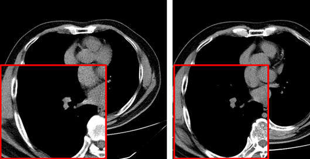
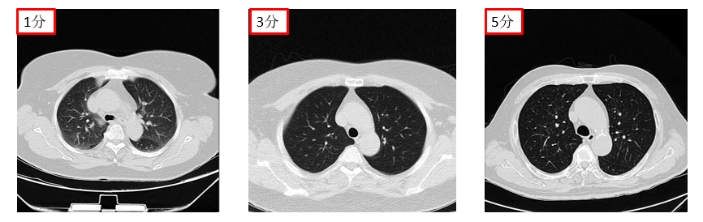
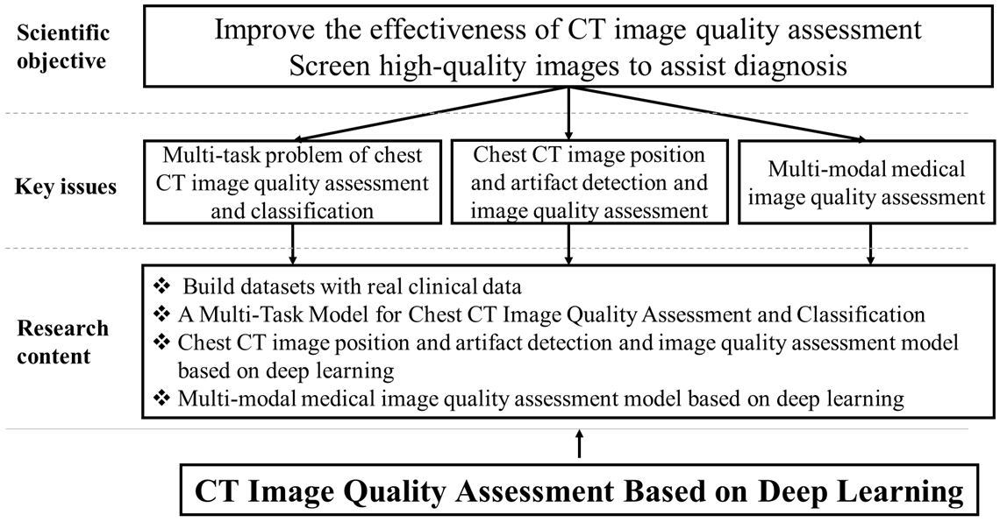
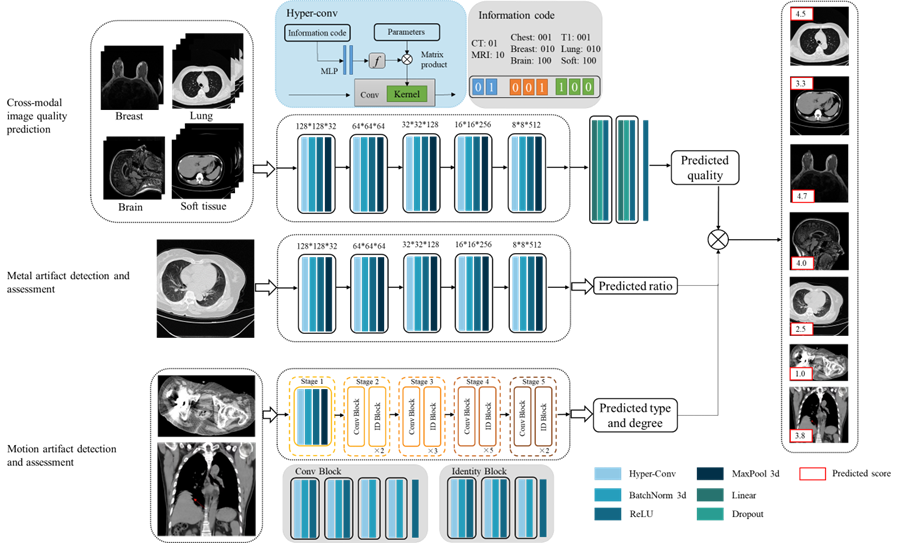
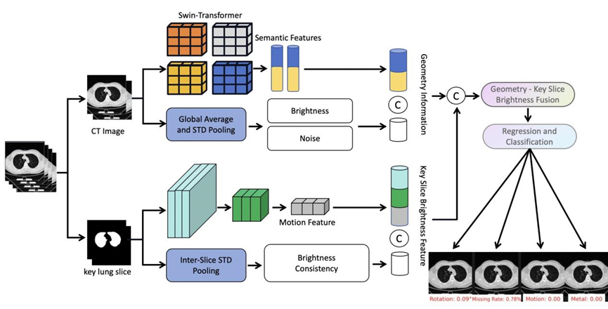
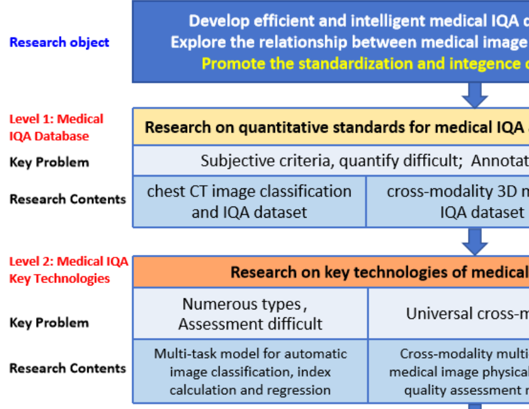
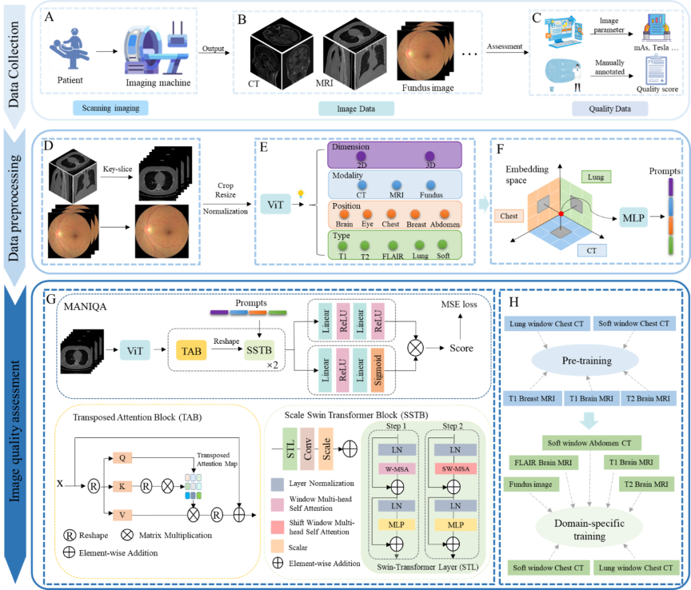

Project Leaders
Siyi Xun
Partner Organisations
深圳人民医院
上海交通大学

Project Example



Project Leaders
Siyi Xun

This research is oriented towards the demands of medical image quality control. In response to the key scientific issues that urgently need to be addressed in the field of medical image quality control mentioned above, this study intends to conduct research at three levels: (1) Medical IQA databases, (2) Core technologies for medical IQA, and (3) Investigation of the correlation between image quality and clinical diagnosis. The specific aims and objectives of this research include:
(1) Addressing the critical gap in accessible and standardized datasets for medical image quality control, this research established a set of standardized, comprehensive, and well-interpretable quantitative criteria for chest CT image quality. We innovatively integrated real-world clinical data from Shenzhen People's Hospital with resources from multiple open-source public datasets. Leveraging this integration, we designed and constructed three novel datasets characterized by high practical utility: (i) a chest CT image classification and quality assessment dataset, (ii) a cross-modality 3D medical IQA dataset, and (iii) a cross-modal cross-organ medical IQA dataset. The establishment of these resources not only fills a significant void in the field of medical IQA data, but also provides a solid data foundation for the standardized and intelligent advancement of research in this area.
(2) To address the challenge of assessing and classifying chest CT image quality under complex conditions, we investigate a multi-task model capable of jointly performing CT image series type categorization, quality classification, and automatic regression of Signal-to-Noise Ratio and BRISQUE metrics. By integrating the results of these multiple tasks, the model achieves simultaneous classification and preliminary quality assessment of chest CT images.To further enhance the accuracy and clinical utility of the assessment results, the model incorporates auxiliary supervision from human annotations. The final output is an automated image quality score. This score provides clinicians with critical decision support when browsing and filtering vast volumes of medical images, particularly those of various types that are difficult to make intuitive and effective horizontal comparisons.
(3) To address the challenge of universal quality assessment for cross-modality and cross-organ medical images, we build a universal medical cross-modality IQA model. The model architecture adopts a two-stage progressive framework: Stage 1: Physical Parameter-Guided Mapping. Addressing the scarcity of quality annotation labels in medical imaging, this stage utilizes physical parameters as surrogate labels to establish a mapping relationship between these parameters and image quality. Building upon this, we propose a Hybrid-conv model with perceptual prompts. This model fuses modality-specific features with anatomical structure prior knowledge to achieve preliminary quality scoring for multi-modal, multi-organ images. Stage 2: Foundation Model with Expert Integration. Utilizing stage 1 IQA technology as a foundation, this stage constructs a physical parameter-based pretraining as an upstream task to learn common cross-domain quality features. Subsequently, it integrates expert experience as supervision to accomplish domain-specific downstream IQA tasks. Concurrently, the model incorporates a multi-scale saliency-aware slice selection module and an adaptive domain-aware prompt fusion module. This represents the first universal and scalable foundational model for medical IQA.
(4) Addressing the need to investigate the correlation between medical image quality and AI diagnostic performance in clinical environments, this research aims to perform a comprehensive systematic analysis to deep-explore the quantitative relationship between them. The study utilizes a stratified and balanced lung nodule CT image dataset constructed for this purpose. Nodule detection is performed using certified AI-assisted software. Additionally, average image quality scores are obtained through a standardized process involving multiple reviewers. Employing multidimensional statistical analysis methods the research precisely quantifies the impact of image quality on the lesion detection capability of the AI model while controlling for variables such as gender and age. The findings will provide empirical evidence for assessing the robustness of AI diagnostic models when applied to real-world clinical data.
(5) Computed tomography image quality is significantly impacted by various factors, including scanning parameters , patient factors, motion artifacts, and metal artifacts. While the medical imaging community has developed some tools for data quality validation, dedicated IQA methods for CT, especially for artifacts and positioning, remain challenging. This study proposes DEFCT-QA (Defective Computed Tomography Quality Assessment), a dedicated model for assessing medical image quality. DEFCT-QA simulates common clinical defect scenarios, including incomplete imaging, field-of-view errors, metal artifacts, and motion artifacts. Acknowledging the critical impact of noise and clarity, we integrated manually designed features extracted via traditional algorithms with semantic features derived from deep learning models to form a comprehensive geometric feature representation. Subsequent fusion yielded an image quality perception representation. Critically, rigorous multi-center external validation using the public multi-center Luna16 dataset further confirmed the model's effectiveness and generalizability in assessing diverse image defects.
Project Example

